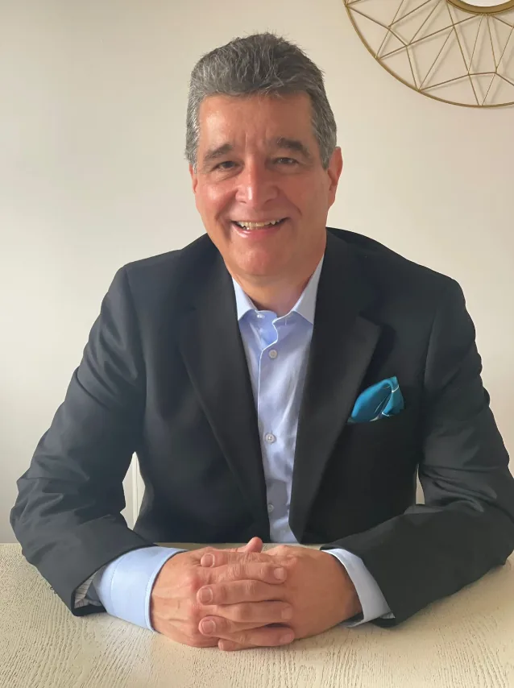
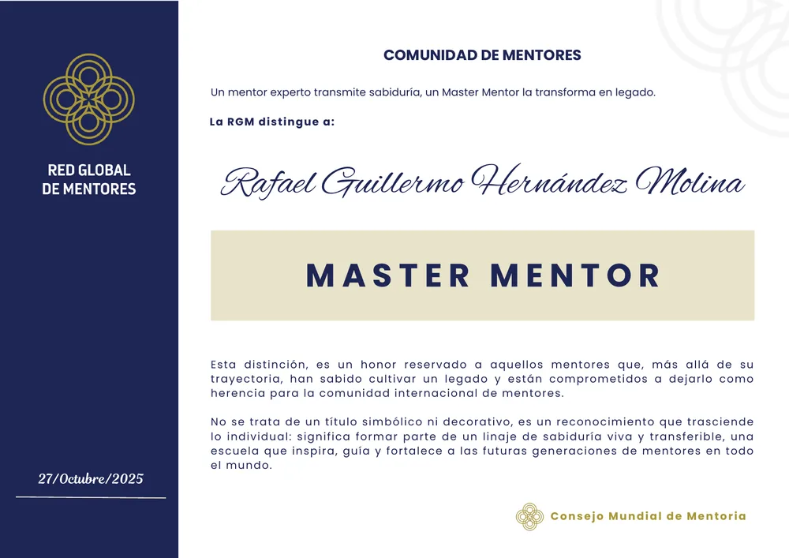
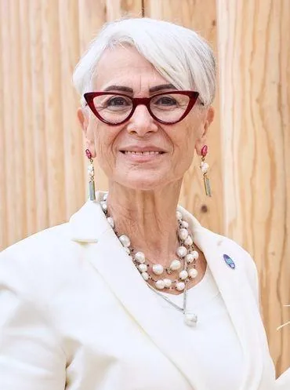
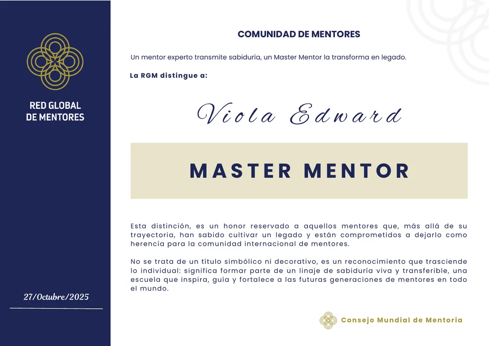
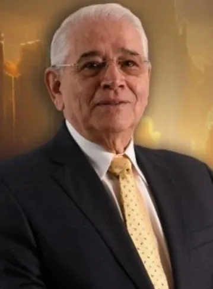
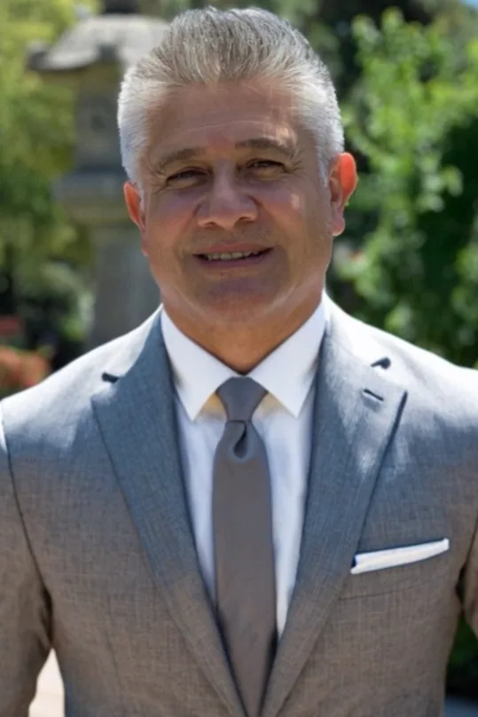
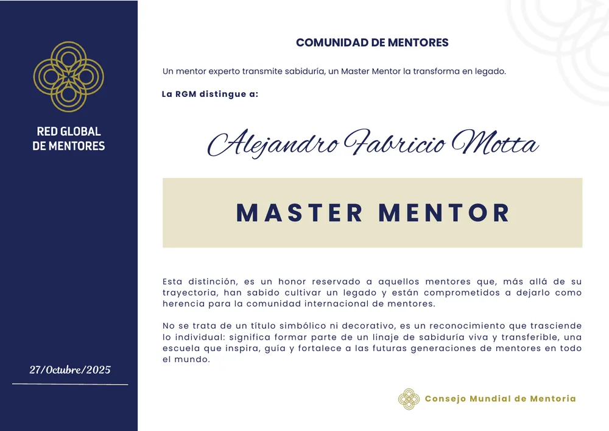
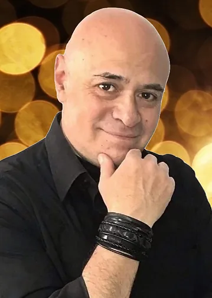
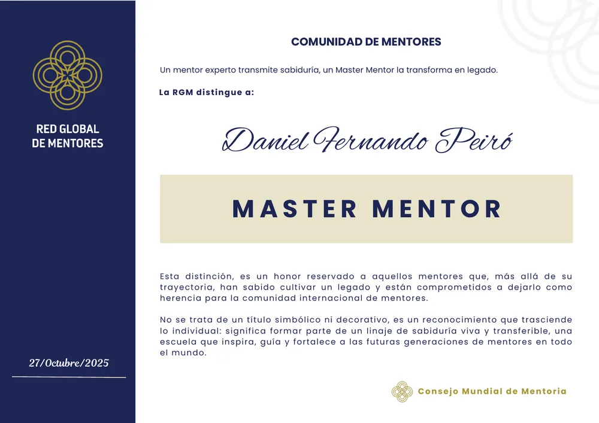

Início / MasterMentors
Distinções
MasterMentors
A distinção mais alta que a Rede Global de Mentores atribui a quem deixou um legado na comunidade.
Esta distinção é uma honra reservada aos mentores que, para além da sua trajetória, souberam cultivar um legado e estão comprometidos em deixá-lo como herança à comunidade internacional de mentores.
Não se trata de um título simbólico nem decorativo, é um reconhecimento que transcende o individual: significa fazer parte de uma linhagem de sabedoria viva e transferível, uma escola que inspira, guia e fortalece as futuras gerações de mentores em todo o mundo.


Ver diploma (PDF)Rafael Guillermo Hernández Molina · Colômbia
Rafael Guillermo Hernández Molina recebe a distinção de Master Mentor da RGM
Pela sua liderança consciente e pelo seu contributo decisivo para a consolidação da mentoria profissional
Na RGM, a figura de Rafael Guillermo Hernández Molina ocupa um lugar significativo: impulsionador incansável da mentoria como disciplina global, Rafael dedicou a sua trajetória a elevar a prática para além do intuitivo, promovendo uma mentoria estruturada, ética e evolutiva, capaz de gerar impacto real em pessoas, organizações e comunidades.
Autor de oito livros de desenvolvimento humano, entre eles Mentoría Consciente e Experiencias Maestras, a sua obra constitui um contributo substantivo para o pensamento de uma mentoria contemporânea, oferecendo quadros concetuais e vivenciais que acompanharam numerosos mentores no seu próprio processo de maturidade profissional e pessoal.
Durante o período de outubro de 2024 a outubro de 2025, Rafael exerceu a Presidência da RGM num momento-chave de maturação institucional. Durante este período não só ajudou a consolidar uma rede multidisciplinar, como contribuiu para clarificar o sentido da mentoria como prática ao serviço da evolução humana.
Esta distinção honra o seu legado e, ao mesmo tempo, celebra uma forma de liderar que deixa marca pela consciência que desperta.
Em reconhecimento da sua trajetória na RGM, do seu contributo sustentado para a comunidade e da qualidade ética e humana da sua liderança, a Rede Global de Mentores confere-lhe a distinção de Master Mentor, como expressão de gratidão, legitimidade e respeito por um caminho percorrido com coerência, visão e compromisso.


Ver diploma (PDF)Viola Edward · Chipre
Viola Edward recebe a distinção de Master Mentor da RGM por expandir a mentoria à escala global a partir de um compromisso profundamente humanista.
Num mundo que clama por uma liderança com propósito, a mentoria requer embaixadores capazes de levar a sua mensagem para além das salas de formação e das sessões individuais. Viola Edward é, sem dúvida, uma dessas vozes.
Não só exerceu a mentoria com mestria, como a transformou numa causa global, numa ponte entre culturas, numa energia viva ao serviço da transformação coletiva. Cofundadora da Global Mentoring Network, tem sido incansável na sua missão de levar a mentoria a fóruns internacionais, cimeiras de liderança, encontros sobre equidade, saúde mental, empreendedorismo e direitos humanos. Aí, instalou a arte de acompanhar como uma ferramenta-chave para a paz, a inclusão e a evolução da consciência social.
Viola não prega à distância: encarna o que ensina. A sua presença irradia humanidade, a sua palavra semeia compromisso e as suas ações tecem comunidade. No seu caminho, a mentoria não é apenas técnica nem metodologia: é vínculo, ressonância e responsabilidade partilhada com o devir do mundo.
Graças ao seu trabalho, a mentoria integrou-se em iniciativas de alcance internacional, gerando impacto em comunidades diversas, tornando visível o seu poder como agente de mudança e articulando-a com as grandes causas do nosso tempo: a justiça social, o empoderamento feminino, o diálogo intergeracional e a sustentabilidade humana.
Pela sua visão ampla, pela sua entrega generosa e pelo seu ativismo sereno mas firme, a Rede Global de Mentores confere-lhe a distinção de Master Mentor.
Não como um ponto de chegada, mas como reconhecimento a quem fez da sua vida um movimento, da sua palavra uma rede e da sua mentoria um ato de amor coletivo.

Ver diploma (PDF)Dr. Nelson de J. Rueda · Colômbia
O Dr. Nelson de J. Rueda recebe a distinção de Master Mentor da RGM por edificar o corpo académico que sustenta a profissionalização da mentoria.
Toda a disciplina que aspira a perdurar precisa de pensamento, método e estrutura. E toda a comunidade que procura transcender requer uma linguagem partilhada, uma pedagogia clara e uma base académica sólida. É precisamente isso que o Dr. Nelson de J. Rueda entregou à mentoria global: uma arquitetura formativa rigorosa, acessível e profundamente humana.
Na sua função de Diretor da Academia da Rede Global de Mentores, concebeu e liderou o desenvolvimento dos programas BPM, CPM e CXPM, criando um percurso evolutivo para quem se inicia, se consolida ou aspira à mestria na arte de acompanhar. O seu contributo não foi apenas programático, mas também epistemológico, didático, concetual e ético.
Com uma visão integradora e um profundo domínio dos processos de desenvolvimento humano, coordenou a edição dos Guias Funcionais da Mentoria: uma coleção que não só transmite conhecimentos, como forma consciências, modela práticas e honra o espírito transformador do verdadeiro mentor.
Graças ao seu trabalho, hoje a Rede Global de Mentores conta com:
- Um corpo académico estruturado que garante qualidade, coerência e progressão formativa.
- Uma linguagem comum que une mentores de diversas culturas e contextos sob princípios éticos e metodológicos partilhados.
- Um processo de certificação profissional com fundamentos sólidos e exigências alinhadas com a missão de impactar vidas de forma significativa.
Mas para além dos programas e dos textos, o Dr. Rueda semeou uma forma de pensar e sentir a mentoria, em que o conhecimento é posto ao serviço do propósito e acompanhar o outro se entende como um ato de responsabilidade sagrada.
Pela sua visão académica, pela sua liderança formativa, pelo seu compromisso constante e silencioso, e por ter dado forma, profundidade e legitimidade à profissionalização da mentoria, a Rede Global de Mentores atribui-lhe a distinção de Master Mentor.
Um reconhecimento que não só honra a sua trajetória, como o reconhece como quem edificou —com sabedoria, humildade e generosidade— o pilar académico que sustenta a nossa missão coletiva.


Ver diploma (PDF)Alejandro Fabricio Motta · Argentina
O Eng. Alejandro Fabricio Motta recebe a distinção de Master Mentor da RGM.
Por transformar uma iniciativa local num ecossistema global de mentoria.
Há pessoas que não só abraçam um sonho: estruturam-no, fazem-no crescer e convertem-no em legado. O Eng. Alejandro Fabricio Motta é uma dessas pessoas. A sua história com a mentoria não começa com a procura de títulos nem com a ambição de figurar, mas com uma paixão autêntica por ligar, estruturar e projetar o poder transformador do acompanhamento humano.
Em 2013, quando a mentoria era ainda um terreno fértil mas pouco explorado, o Eng. Alejandro Motta recolheu os frutos iniciais semeados pelo Dr. Fernando Daniel Peiró Herrera e deu-lhes forma, método, horizonte e estrutura. Assim nasceu a atual Rede Global de Mentores (RGM): um ecossistema profissional que hoje liga centenas de mentores, forma mentores, certifica trajetórias e dá visibilidade e respaldo institucional a quem exerce esta nobre disciplina.
Alejandro não se limitou a organizar uma rede: construiu uma arquitetura concetual, ética e operativa que converteu uma comunidade incipiente numa organização internacional. Sob a sua liderança:
- Desenharam-se e lançaram-se plataformas de certificação profissional por níveis.
- Criaram-se processos formativos, manuais, padrões e protocolos que hoje dão solidez à prática da mentoria.
- Promoveu-se a mentoria como disciplina autónoma e diferenciadora, com identidade própria e projeção planetária.
- Geraram-se espaços de visibilidade, publicações, seminários e redes de colaboração entre países e culturas.
Mas para além das conquistas institucionais, o Eng. Motta foi, acima de tudo, um mentor de empreendedores. Acompanhou processos individuais, impulsionou talentos, semeou confiança e sustentou com humildade e constância um trabalho que muitos admiram, mas poucos conhecem na sua dimensão profunda.
O seu pensamento estratégico, a sua capacidade de gestão e a sua entrega sem pausas consagram-no como um dos arquitetos mais influentes do legado contemporâneo da mentoria. Se hoje falamos de uma Rede Global de Mentores com alcance, padrões e sentido de missão, é porque o Eng. Motta se atreveu a transformar uma iniciativa local numa proposta global, coerente e sustentável.
Escritor incansável, entre as suas obras mais significativas encontram-se: Mentor & Gurú, Mentoría en Gestión de Proyectos, Emprender Después de los 50 Años, Edad Espiritual, El Mentor Experto, Guía para Desarrollar Modelos de Mentoría, El Éxito de un Mentor Profesional, Transfiriendo Sabiduría, Reflexiones de un Emprendedor Serial, Los Ocho Dominios del Emprendedor,…
Por tudo isto —e para além do visível—, a Rede Global de Mentores confere-lhe, com honra e gratidão, a distinção de Master Mentor. Não apenas como reconhecimento da sua trajetória, mas como testemunho de um legado vivo que continuará a crescer enquanto houver alguém disposto a acompanhar outro no seu caminho de desenvolvimento.


Ver diploma (PDF)Fernando Daniel Peiró Herrera · Argentina
Fernando Daniel Peiró Herrera recebe a distinção de Master Mentor da RGM por ser o semeador original de uma comunidade de mentores.
A história da mentoria na Ibero-América não pode ser escrita sem mencionar o Dr. Fernando Daniel Peiró Herrera. Quando ainda não existia uma linguagem comum para falar de mentoria profissional, quando o termo apenas despontava timidamente nas organizações e nos processos de desenvolvimento do talento humano, ele já estava a semear o futuro.
Corria o ano de 2011 e, longe de modas passageiras ou reconhecimentos institucionais, Fernando teve a coragem de ver antes dos outros. Convocou, uniu e lançou pontes entre profissionais apaixonados pelo desenvolvimento humano. A sua iniciativa não foi simplesmente editorial: foi fundacional.
Através de uma revista colaborativa —que integrou reflexões, artigos, testemunhos e modelos de acompanhamento— plantou a primeira semente do que hoje floresce como a Rede Global de Mentores (RGM).
Hoje, ao reconhecer Fernando Daniel Peiró Herrera como Master Mentor da RGM, não celebramos apenas um profissional brilhante: honramos o semeador original, aquele que, com visão e generosidade, abriu o sulco onde tantos cultivam hoje a sua missão como mentores.
Esta distinção é um ato de justiça simbólica e de profunda gratidão. Porque se a mentoria tem hoje casa, comunidade e causa partilhada, é porque alguém —há mais de uma década— acreditou na sementeira muito antes de ver a colheita.